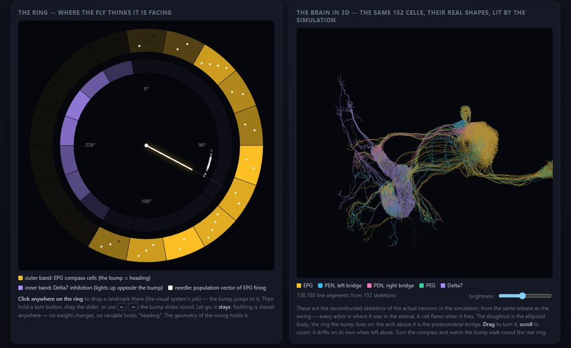
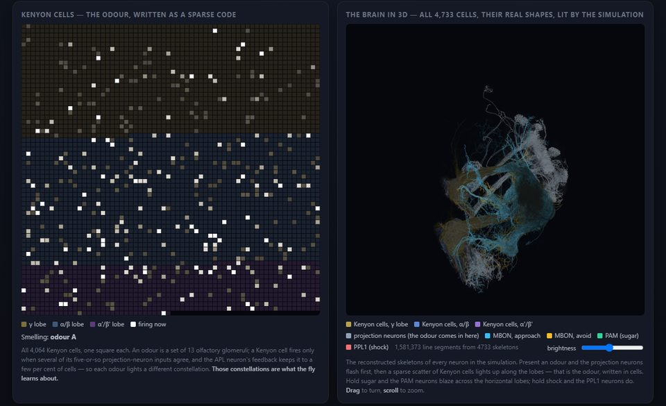
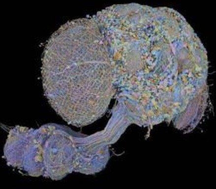

Fly Brain — a dead insect's sense of self, running in your browser
One male fruit fly. Killed, fixed in resin, sliced into thousands of sections, every neuron and every synapse traced. The animal is gone; its complete wiring diagram — 166,700 neurons, the MaleCNS connectome released by HHMI Janelia and collaborators in September 2026 — is a public file. This site switches two of its circuits back on. They run in your tab, every cell and connection real, and nothing you do here leaves your browser.

The compass
152 neurons that tell a fly which way it is facing. A bump of activity sits on a ring of cells; the bump is the heading. Steer it, let go, and it holds — nothing stored anywhere, no weight ever changes. The geometry of the wiring holds it. Memory without learning.

The learning centre
4,733 neurons of the mushroom body, with the one synapse type the animal makes plastic. Show it an odour and give it sugar and it comes to like that odour; shock it on another and it learns to avoid that one — specific, reversible, forgettable. Pavlov, on the original hardware.

The vertigo, briefly
A heading is the smallest self there is — the point from which "left" and "right" mean anything at all. For its whole life this fly's brain kept that bearing as a single bump of activity on a ring of a few dozen cells, nudged round by the animal's own turns, held steady in the dark. The animal no longer exists. The ring does. It is holding a bearing right now, in your tab, updated by your hand, for a body it no longer has. The capacity to hold a heading was never in any cell; it was in the arrangement — and the arrangement survived the death of everything it was arranged in.
A connectome is a photograph of a process. These pages run the photograph as a process again. Whether that is resurrection, re-enactment or ventriloquism is a question we are not qualified to settle, so we did the honest thing and measured it instead.
The series
Part 1 is the compass, Part 2 the learning centre. Later parts: the experiment (the brain as an instrument), the room (visual landmarks anchoring the compass), the eye (the motion detectors), and finally all 166,700 neurons at once. The code, the data pipeline and the write-up are on GitHub; the simulators there run the same circuits in Python, and the pages here are the same pages, with the fly moved into a Web Worker.